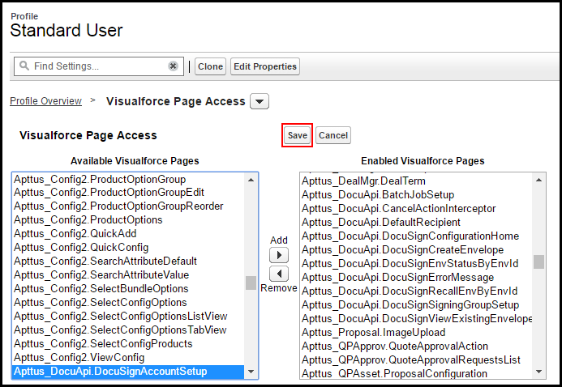

Once you have created an account and users in DocuSign, you must associate those users to the users in Power.
Note:
The feature of creating a DocuSign Account from DocuSign Configuration Home page has been discontinued. You can no longer provision new accounts to your users from DocuSign Services. To create an account on DocuSign, go to DocuSign.
Associating a user to a DocuSign account
Once you have created an account and users in DocuSign, you must associate those users to the users in Power. Doing this enables the user to access the Power-provided functionalities using Salesforce org, which includes sending an agreement for eSignature by clicking the eSignature button on an agreement record, select which document to send, and which recipients to send it to. While there are other fields that can be completed for a user, you must ensure the First Name, Last Name, and Email address match between the user's Power user account and DocuSign user account.
To associate a user to DocuSign account
You must have an existing DocuSign account.
To have the DocuSign Configuration Home tab available by default, click All Tabs and then click Customize My Tabs to add it to one of your Custom App.
In Salesforce, click the DocuSign Configuration Home tab.
Click the Setup DocuSign Account tab.
Tip:
Ideally, Setup DocuSign Account tab should be accessible by the Administrative Users only. If you want to restrict the non-Administrative users from accessing the Setup DocuSign Account page, you must restrict the access of DocuSign Account Setup page for the users of that profile. Perform the following steps to restrict the page access:
Go to Setup > Administer > Manage Users and select Profiles.
Select the profile for which you want to restrict the access.
Under the Apps section, select Visualforce Page Access.
Click Edit.
From Enabled Visualforce Pages, select DocuSign Account Setup and click
.
Click Save.

Perform these steps for all the users that you want to restrict the page access for. The Setup DocuSign Account tab will now be disabled for the users of the profile that you have restricted the access for.
Complete the following fields.
Field
Description
DocuSign UserName
Enter the email address of the Power user who has a corresponding DocuSign account. The email address should be the same address entered for the user in DocuSign.
DocuSign Password
Enter the password for the email address mentioned in DocuSign Username.
DocuSign Account Id
Enter the Account Id of your DocuSign account.
Click Log In.
Note:
When you have an existing DocuSign User record and you try to log in to your existing DocuSign account using DocuSign Configuration Home, a message is displayed notifying that a DocuSign Administrative User already exists.
Using DocuSign's REST API, a user is created, that corresponds to a DocuSign user in DocuSign. You can go to the DocuSign User tab and view the details for the user.
Auto-Provisioning a DocuSign User
Previously, if the user who logged into the Salesforce org was not a registered DocuSign user, they could not send a document for signature. You can now auto-provision the users logged into your Salesforce org based on the DocuSign licensing agreement and licenses rendered to your account.
To enable Auto-provision a DocuSign User feature
Navigate to App Setup > Develop > Custom Settings > DocuSign System Properties > System Properties and enable the Auto Provision User Enabled check box.
If you select the Autoprovision User Enabled check box and the user logged in Salesforce is not a DocuSign User, the user is automatically provisioned in DocuSign when the user clicks Send for e-signature for an agreement or a quote.
The account is provisioned on the back end without interrupting the workflow of the user unless the org that the user is a part of was installed without Power initially. In this case, an email is sent to the user in order to confirm their account creation.
When you auto-provision a user ensure that you
Auto-Provision User Enabled check box in DocuSign System Properties is selected.
Activate the user account manually in DocuSign or through email. Once the user account is active, they can send a document for eSignature.
Click the DocuSign Configuration Home tab, and re-enter docusign login and password. You can also create a new DocuSign User Account from this page. The user account needs to be activated manually before you proceed to login.
Note:
If your user is rendered an Auto-provisioned account, the user must enter the Company Name in his Salesforce Org.